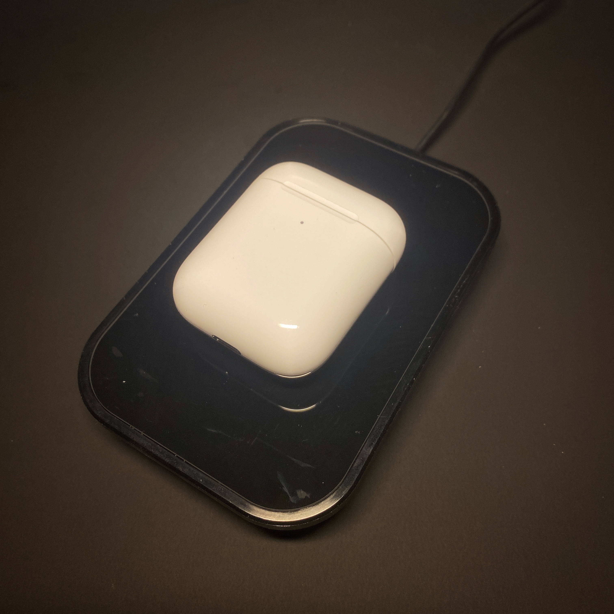
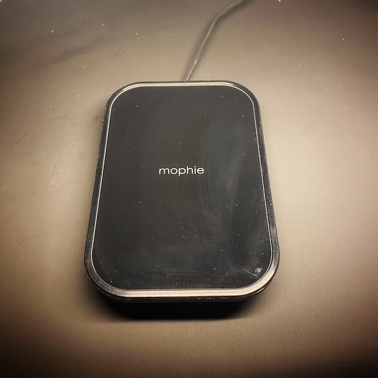

Mophie Wireless Charging Stand Review
22/3/2021
Introduction
Currently studying/working from home and receiving a lot of messages? Check out this wireless charging 2-in-1 stand which is perfect on your work desk to still be able to view and charge your phone at an angle whilst you work!
.jpg)
Why did we purchase this?
We purchased this product as I am currently studying from home and required a wireless charger for convenience on my workable to be able to view my phone notifications at a press of the screen without needing to adjust my seating position or lifting up my phone of a wireless charging pad.
We found this Mophie Wireless Charging Stand (don’t mistake this for a charging pad as it allows the phone to stand upright instead of laying flat on a table) for around £20 at my local B&M retail store. Mophie is a brand that is quite expensive and is advertise on Apple’s website retailing at £64.95!
What’s in the Box?
Inside the box, it comes with the wireless charging stand in plastic wrap and a 1.5m UK plug adapter that has a proprietary charger to the Mophie stand. There was some paper work inside to show how the product works. It includes everything to work straight out of the box.
Supported devices
The charger is advertised at 7.5W for iPhones and 10W for other Qi-enabled devices, it is optimised for fast charge, the wireless charging stand delivers the fastest wireless charge your smartphone can handle.
If your smartphone has a thin case on it (up to 3mm), the wireless charging stand can deliver a wireless charge without removing the case.
It can be used flat or at an angle to charge a mobile phone or Qi-enabled accessories like wireless earphones such as Airpods or Google Pixel Buds.
Design
This wireless charger comes with a smooth, polished glass finish and the brand logo in the middle of the charger which looks sleek and simple for any work desk. The outer construction is mainly made of plastic on with metal hinges.
The stand is built sturdy, it doesn’t feel like it will break with continuous use. The stand is similar size to your palm which will not take a lot of space on your table.
It has a small LED bar at the front of the charger which will blink if the device is not charging or has reached 100% which is great to indication.
Issues
Upon trying this product with different devices, we found an an issue with larger devices occasionally stop charging and have the LED consistently blinking to show its not charging, we believe the coil is a little lower to accommodate both portrait and landscape charging.
As the charging pad allows both charging flat and at an angle, it makes the charger quite tall of the table when charging at the flat angle compared to other standard Qi chargers.
This product is advertised for iPhone products which segregates the market, appealing to Apple users only however it is compatible with other Qi-enabled devices. It is also to mention wireless chargers will be slower than the current wired options, as newer iPhone’s support 18/20W of fast charging.
The glossy glass finish looks great out of the box, after 10 minutes of use, it attracts a lot of fingerprint and dust on the front of the Qi Charger.
Conclusion
For its relatively cheap price tag compared to other products on the market that offer similar functionality (under £20), it makes charging devices on a bedside table or work desk a lot easier as it is as easy as placing the phone on the charging stand. The adjustable height allows different viewing angles, and the 2-in-1 function allows the ability to charge headphone wirelessly which some devices doesn’t allow. Unfortunately there is a trade-off between charge speeds and the options of no wireless, but with that in mind if you require a good brand wireless charger for your expensive everyday devices, we recommend this product if you can find it at this price!